Setting up the notification Shortcut
Your bank already notifies you about every card payment. A Shortcuts automation can hand that notification to Kopiyka, which reads the amount and the shop on the phone and logs the payment. It needs iOS 27. You set it up once.
The simulator the pictures come from has no bank app, so Messages stands in for it.
1. Shortcuts → +
Open Shortcuts and tap + at the bottom. If it asks you to describe a shortcut, tap Edit.
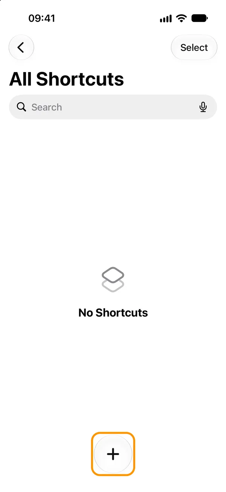
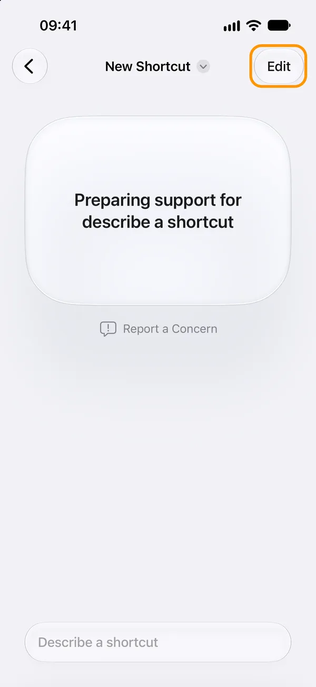
2. Automation → Notification
Tap Automation under the search field, then search for Notification.
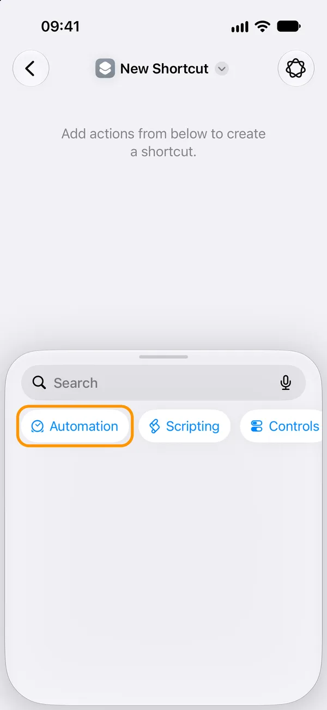
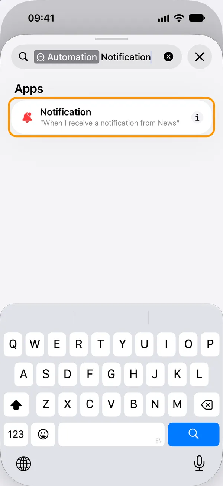
3. Pick your bank’s app
Tap App and search for it. No bank notifications? Pick Wallet (Apple Pay); + adds a second app.
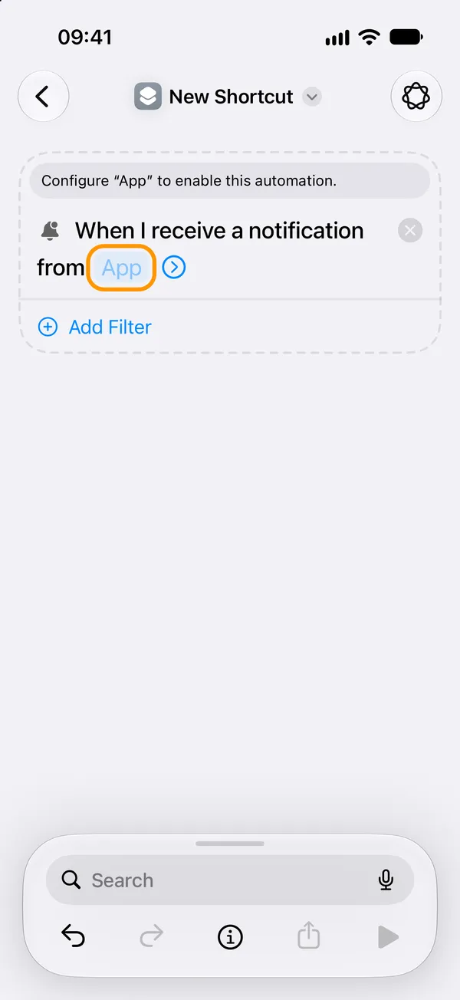
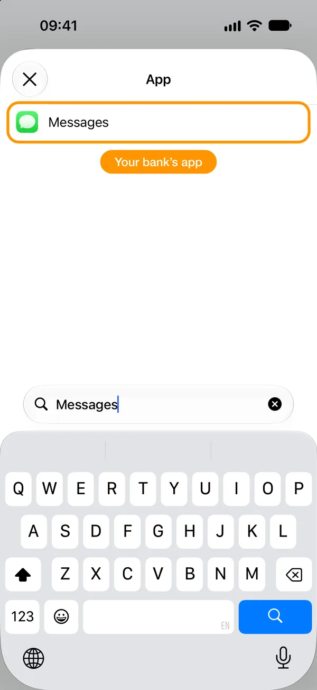
4. Filter: Message contains a word
Add Filter, change Title to Message, and type a word every payment notification has, like “Amount”.
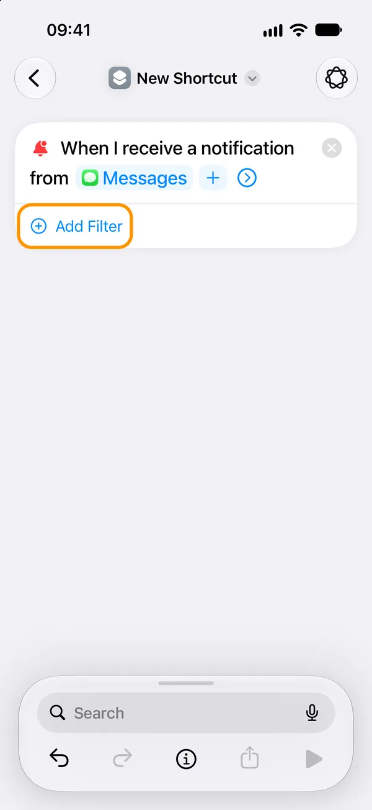
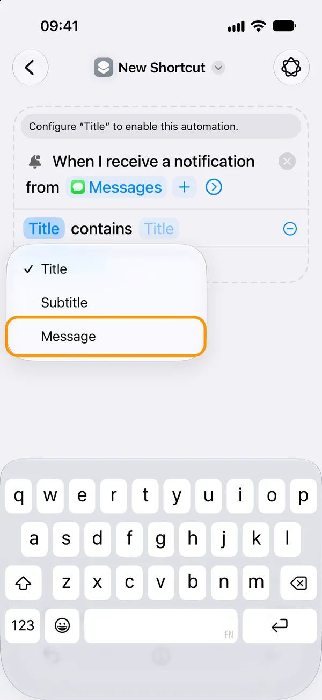
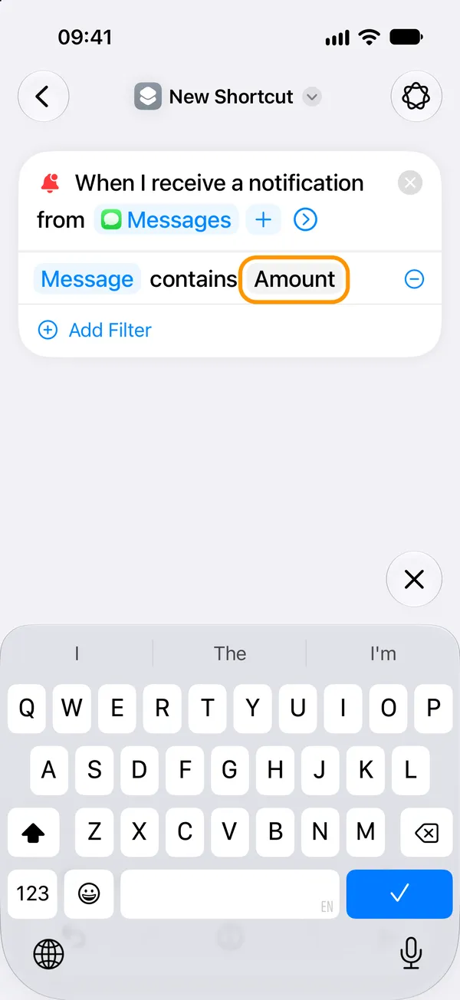
5. Let it run on its own
Tap the arrow beside the app: keep Automation on and Notify off.
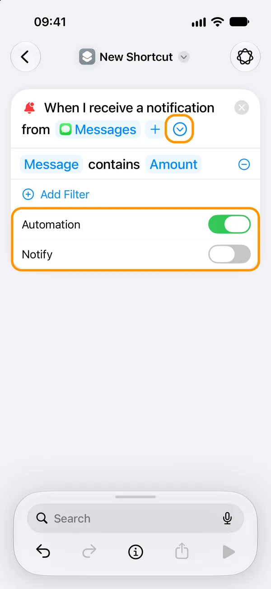
6. Add “Log payment from an app notification”
Search for Kopiyka in the field at the bottom.
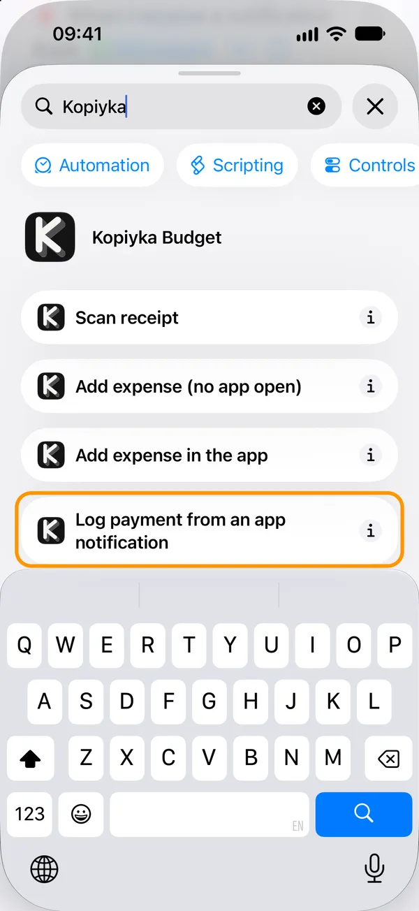
7. Put Notification in its field
Tap Notification, then Select Variable, then the Notification under the trigger.
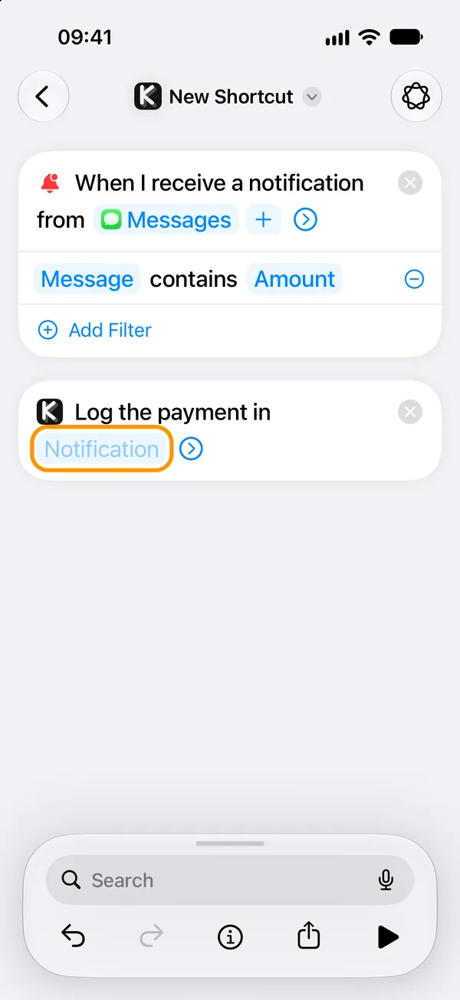
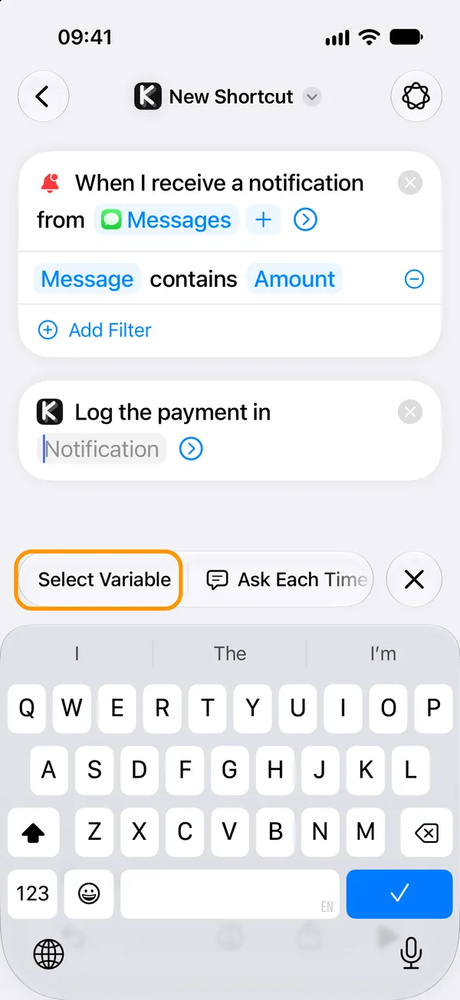
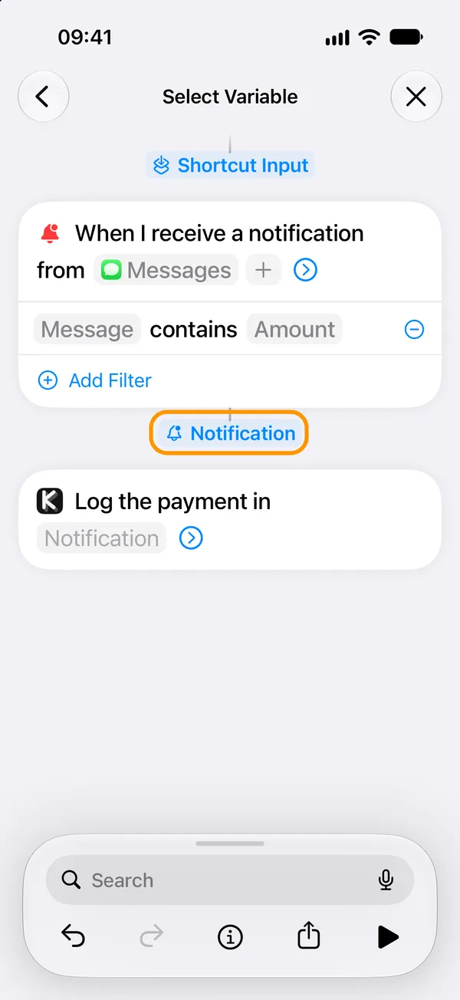
8. Optional: where you paid
Tap the arrow, then Location → Choose → Current Location → ✓. Leave Account empty: Kopiyka picks it from the card or the currency.
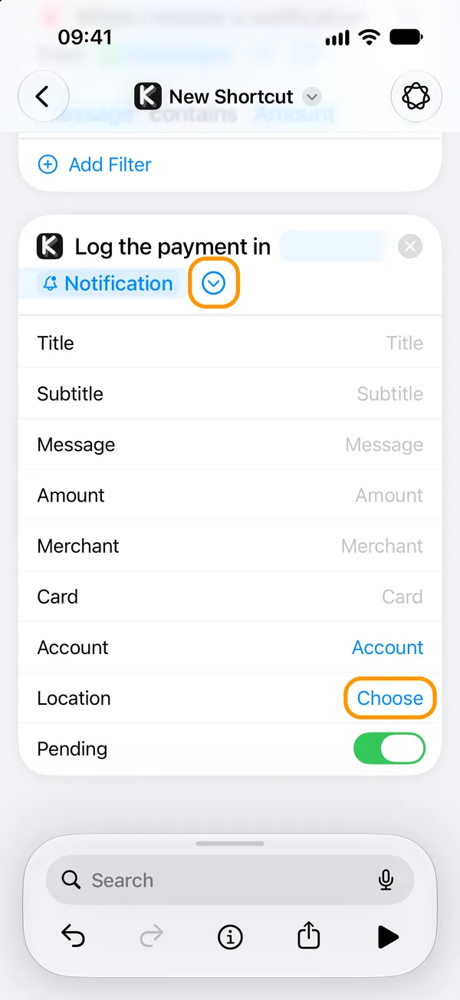
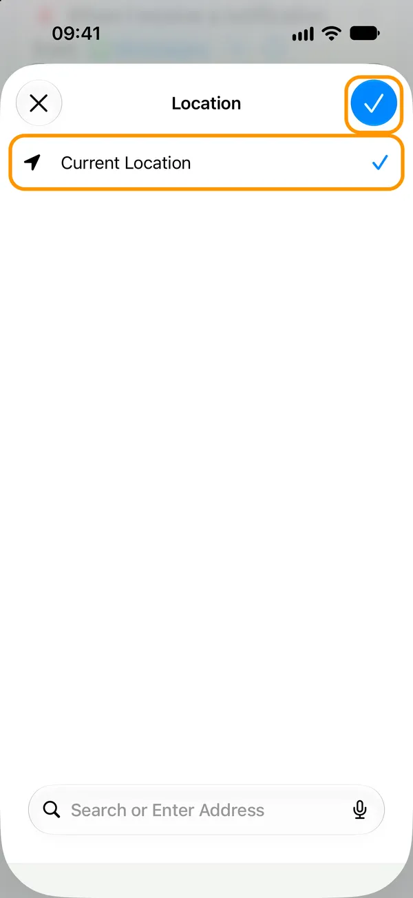
9. Tap ‹ and you’re done
It saves itself. You’ll find it in Library → Automation, where its switch turns it off.
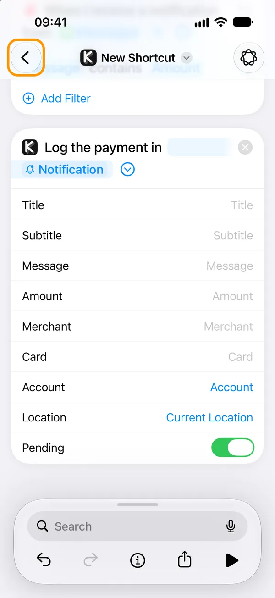
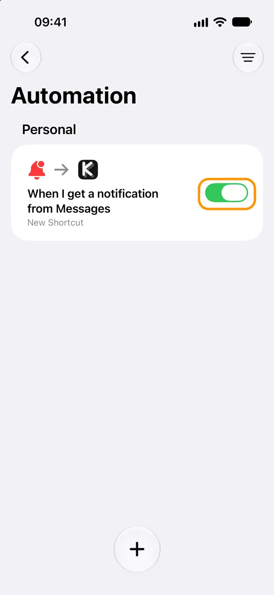
Then pay for something. A shop you have filed before files itself; a new one waits in Pending for a look. Notifications it cannot read are kept in Settings → Shortcut settings → Notification log, so the wording can be taught later.